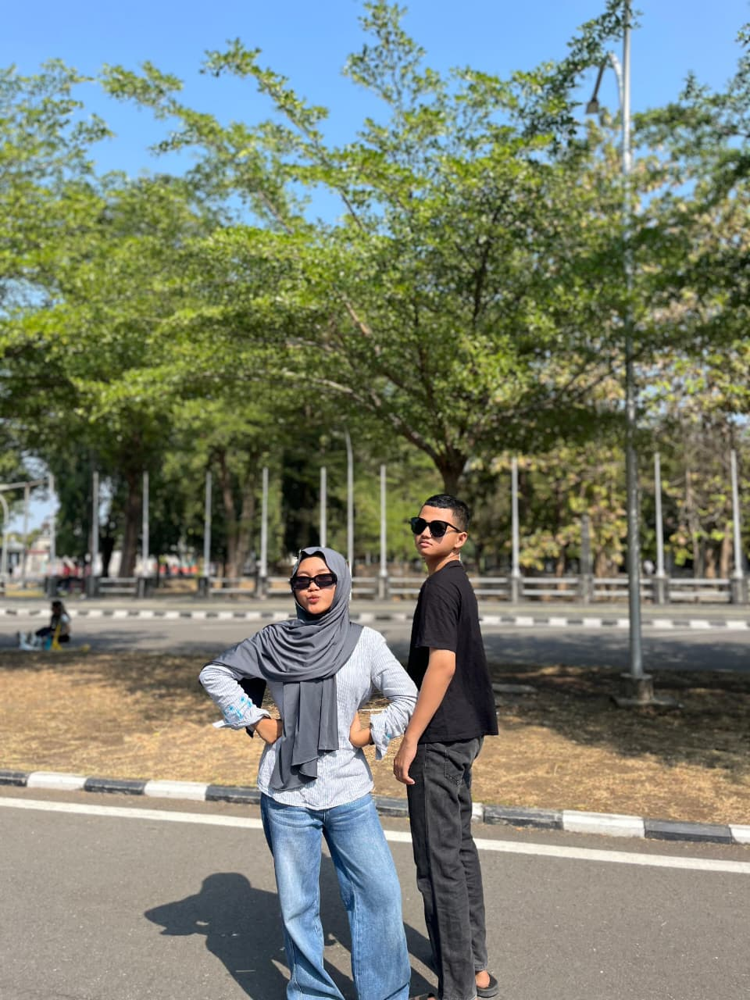

adhelia
🌄
pesona di puncak dan di tepi laut
🏝️
✦ senyum adhelia ✦
💜 foto bersama

⛰️✨
senja di lereng
「 kau teduh seperti kabut di puncak 」
🌴🌊
di ujung pasir
「 hatiku berlabuh di matamu 」
✦ untuk Adhelia ✦
di ketinggian gunung atau di tepi pantai, aku selalu memilih di sampingmu.
kekasihmu
setiap puncak mengingatkan pada tawamu, setiap ombak membisikkan namamu — Adhelia.
dari dalam hati
kau adalah gunung tempatku pulang, dan lautan yang menenangkan jiwaku.
selalu, aku
💜 "pegunungan pun iri pada ketenanganmu"
🌊 "ombak tak pernah lepas dari pantai, seperti aku darimu"
🌺 gunung menyimpan rindu, pantai mengantar doa, dan fotomu menghiasi setiap sudut hati 🌺
untuk Adhelia, dengan segenap warna ungu langit senja.